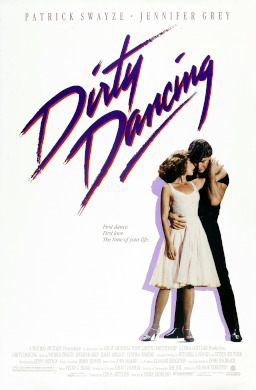

Dirty Dancing
1987
Directed by Emile Ardolino
Expecting the usual tedium that accompanies a summer in the Catskills with her family, 17-year-old Frances ‘Baby’ Houseman is surprised to find herself stepping into the shoes of a professional hoofer—and unexpectedly falling in love.